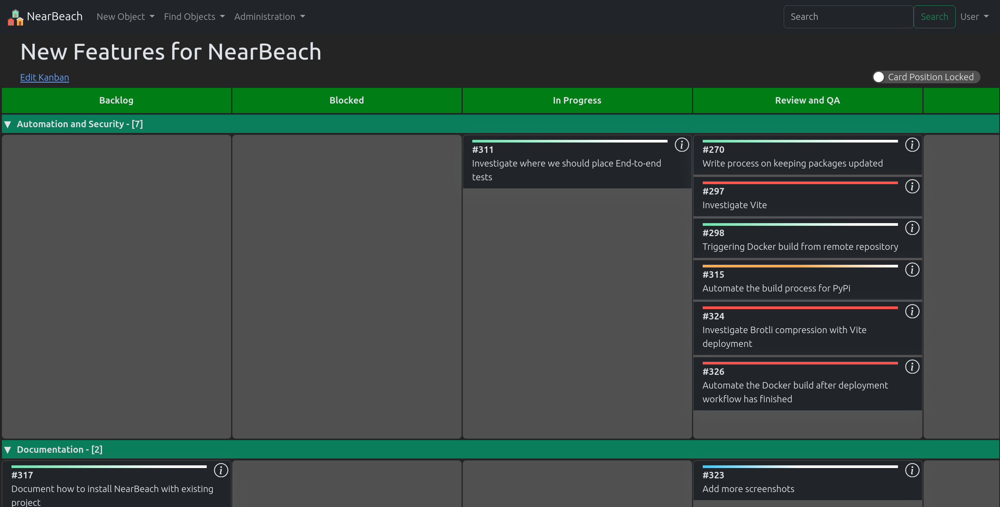
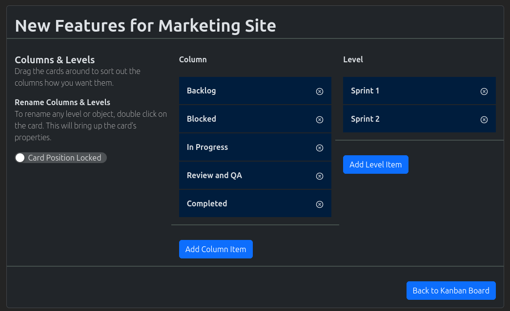

Kanban Board
{kind=link}
Users will be able to create their own kanban board.
Create Kanban Board
In the navigation menu at the top of the page. Click the option “New Object”
In the dropdown, click on the option “New Kanban Board”
The “New Kanban Board” page will load.
Create a unique name for the kanban board. If the board already exists, it will notify you in red text.
In the level section, the cards can be moved around to represent their order on the board. Double clicking on the cards will allow the user to edit the description of the level.
In the column section, the cards can be moved around to represent their order on the board. Double clicking on the card will allow the user to edit the description and the column’s property. The column’s properties can be broken down into;
Backlog - marks the card as being in backlog.
Normal - marks the card as being normal
Blocked - marks the card as being blocked. A dialog will appear when a card is moved into this location
Completed - marks the card as being completed.
Pick the appropriate groups from the selection box.
Click on the “Add kanban” button for the kanban board to be created.
Search Kanban Board
In the navigation menu at the top of the page. Click on the option “Find Objects”
In the dropdown, click on the option “List all Objects”
The “Search” page will load. Use the search field to search for your required kanban board.
Note
Spaces are considered wildcards in this search.
Update Kanban Board Settings
{kind=link}
On the kanban board information page, click on the drop down “Kanban Menu”
In the dropdown menu, choose the option “Edit Kanban”
The “Edit Kanban” page will now load
Make the appropriate changes on this page, once done hit the “Back to Kanban Board”
Note
All changes are saved automatically
Note
Double clicking on either the column/level cards will open the edit modal for them.
Create a New Card
Using Board
On the kanban board information page, move your mouse across the board
In the appropriate cell, click on the button “New Card”
The “New Card Modal” will appear, fill it out appropriately
Link in existing Projects and Tasks
Using Kanban Board
On the kanban board information page, move your mouse across the board
In the appropriate cell, click on the button “Link Object”
The “New Kanban Link Wizard” modal will appear
Use the search options to find the appropriate object, select and then add to the board
Editing Cards
Users will be able to edit a card by either double clicking on the card, or clicking on the (i) information icon.
Note
Any linked objects will not open the card modal. Instead they will go directly to that object.
Card Edit Modal
The card edit modal is broken up into the following sections;
Details
Description
Note
Users
Downloads
Misc
Card Details
This tab stores the following information for the card;
Card title - the title of the card as displayed on the board
Card priorty - the priority of the card as displayed on the board
Card location - the location of the card on the board
Description
This tab stores the description of the card. Users will be able to use the description field to bring more detail into the card.
Note
This tab stores all the notes made against the card. It even stores the “Blocked” notes, when a card has been moved into the blocked column. Users will be able to edit their prior notes.
Users
This tab stores which users have been assigned to this card
Downloads
This tab stores the documents uploaded against this card. Each card can hold separate documents.
Kanban Board Misc
This tab stores the assigned tags and the public links.
To add an assign tag, please click the “Add Tag to Kanban Card” and follow the wizard. To remove a tag, click on the “delete” icon against the tag.
To create a public link please click the “Create public link”. This link can be shared with the public and they will have basic access to the kanban card. To delete the public link please click on the “delete” icon.